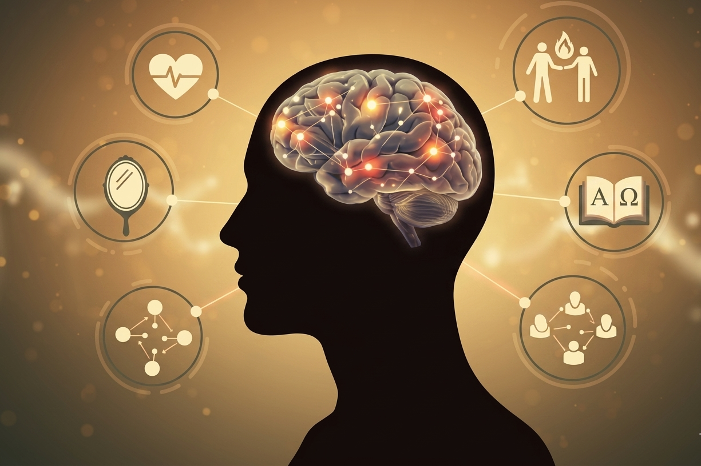

Você provavelmente conhece alguém que, diante de situações de pressão, conflito ou frustração, mantém a calma, pensa com clareza e age de forma equilibrada. E talvez também conheça alguém que, nas mesmas situações, explode, se paralisa ou toma decisões das quais se arrepende depois.
A diferença entre esses dois perfis tem muito a ver com a Inteligência Emocional — uma das competências mais estudadas e valorizadas pela psicologia contemporânea. Entender o que ela é e como desenvolvê-la pode transformar a qualidade dos seus relacionamentos, da sua vida profissional e da sua saúde mental.

O que é Inteligência Emocional?
Inteligência Emocional (IE) é a capacidade de reconhecer, compreender, gerenciar e utilizar as próprias emoções — e as emoções dos outros — de forma eficaz nas diversas situações da vida.
O conceito foi popularizado pelo psicólogo Daniel Goleman em seu livro "Inteligência Emocional" (1995), que se tornou um marco na psicologia e nos estudos sobre comportamento humano. Goleman defende que a IE é tão — ou mais — importante que o QI (Quociente de Inteligência) para o sucesso pessoal e profissional.
💡 Boa notícia: Ao contrário do QI, que é relativamente estável, a Inteligência Emocional pode ser desenvolvida e aprimorada ao longo de toda a vida — com consciência, prática e, quando necessário, apoio profissional.
Os 5 pilares da Inteligência Emocional segundo Goleman
Autoconhecimento Emocional
A capacidade de reconhecer as próprias emoções no momento em que elas surgem. Pessoas com alto autoconhecimento emocional conseguem identificar o que sentem, nomear essas emoções e compreender de que forma elas influenciam seus pensamentos e comportamentos.
Autorregulação
Vai além de simplesmente "controlar" as emoções — envolve gerenciá-las de forma saudável, sem reprimi-las nem se deixar dominar por elas. Inclui habilidades como tolerar a frustração, adiar gratificações e recuperar-se rapidamente de contratempos.
Motivação
No contexto da IE, motivação refere-se à capacidade de se mover em direção a metas por razões internas — não apenas por recompensas externas. Pessoas emocionalmente inteligentes tendem a ser mais resilientes, persistentes e orientadas para crescimento.
Empatia
A habilidade de compreender e sentir o que o outro está experienciando — colocar-se no lugar do outro de forma genuína. A empatia é a base dos relacionamentos saudáveis, da liderança eficaz e da comunicação assertiva.
Habilidades Sociais
Engloba a capacidade de se relacionar bem com as pessoas, gerenciar conflitos, colaborar, comunicar-se com clareza e construir vínculos de confiança. É o resultado prático dos quatro pilares anteriores em ação nas relações interpessoais.
Inteligência Emocional e saúde mental: qual a relação?
Estudos mostram que pessoas com maior IE apresentam menores índices de ansiedade, depressão e estresse. Isso porque a capacidade de reconhecer e regular as emoções funciona como um amortecedor para os eventos desafiadores da vida.
Além disso, a IE está diretamente relacionada com a autoestima, a qualidade dos relacionamentos e a capacidade de tomar decisões mais alinhadas com os próprios valores. Em resumo: desenvolver a inteligência emocional é investir em saúde mental de forma profunda e duradoura.
Quando a IE é baixa, é comum que padrões comportamentais inconscientes se repitam — algo que a Análise do Comportamento mapeia e trabalha com precisão no processo terapêutico.
Como desenvolver a Inteligência Emocional?
Automonitoramento
Reserve minutos ao final do dia para refletir sobre as emoções que sentiu, os gatilhos que as ativaram e como você reagiu. Diários emocionais são ferramentas poderosas.
Vocabulário emocional
Aprenda a distinguir emoções próximas: frustração de decepção, ansiedade de entusiasmo. Nomear com precisão amplia a autoconsciência emocional.
Escuta ativa
Desenvolver empatia começa com ouvir de verdade — com atenção plena, sem julgamentos, buscando compreender antes de responder.
Mindfulness
Práticas de atenção plena ajudam a reconhecer emoções antes de agir impulsivamente. Estudos mostram melhora na autorregulação e redução do estresse.
Psicoterapia
Oferece um espaço estruturado para desenvolver todos os pilares da IE — identificando padrões inconscientes e transformando a relação com suas emoções.
Prática e paciência
A IE é desenvolvida gradualmente. Cada pequeno avanço — uma reação mais calma, uma conversa mais empática — é um passo real de crescimento.